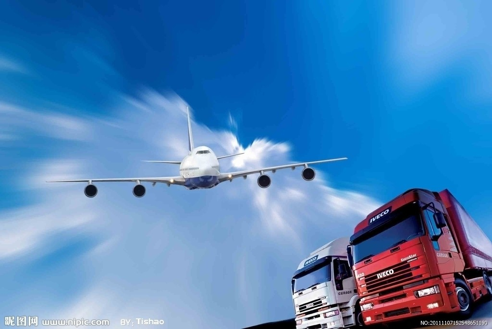
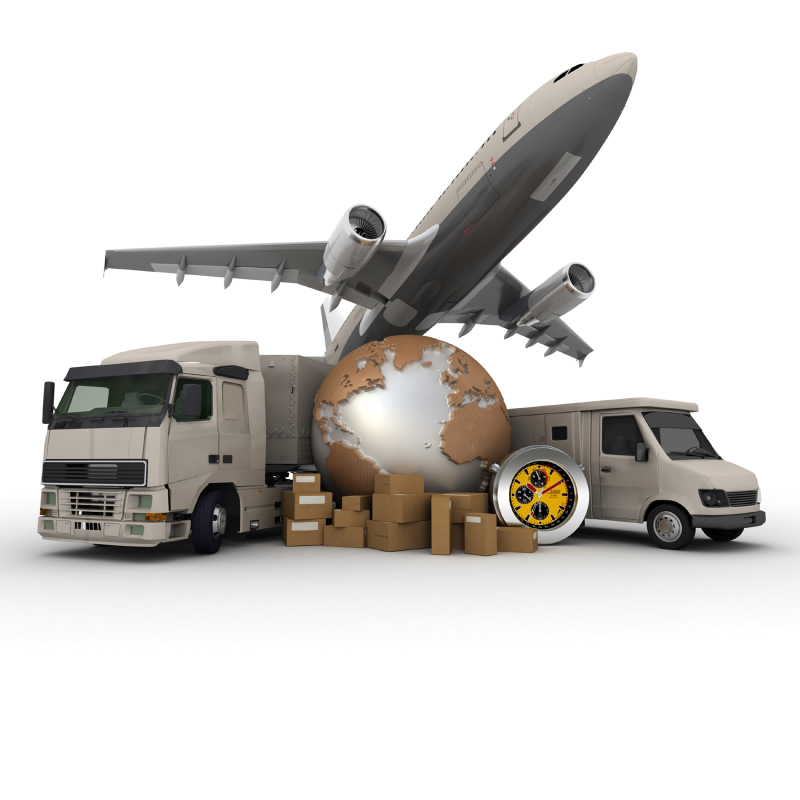
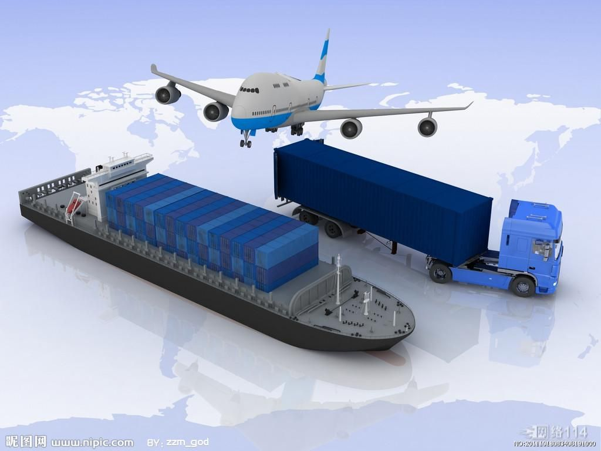
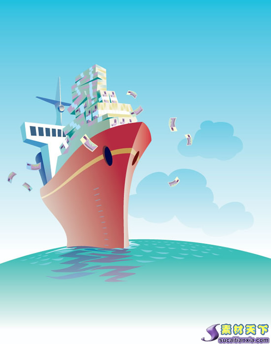

LA HISTORIA DE TRANSPORTE
Si en la etapa preindustrial el viaje era lento e inseguro era debido a la inexistencia de medios de transporte eficaces. Todo el tránsito por tierra se hacía a lomos de animales: caballos, mulas, camellos; o en los carruajes tirados por esos mismos animales, en las pocas carreteras que había. Pero el transporte de grandes mercancías se hacía por mar, o por vías fluviales; con las cocas en la Edad Media, las carabelas de unas 300 toneladas de carga, o el bajel, de más de 500 toneladas.
El transporte por tierra era de mercancías ligeras y de alto valor añadido, mercancías y personas. Normalmente los circuitos en los que se movían los artículos eran cortos, ya que no solían sobrepasar el ámbito interregional. Era llevado a cabo por arrieros profesionales especializados, que durante muchos siglos se agruparon en torno a gremios privilegiados. El transporte de mercancías pesadas y voluminosas requería más medios. También solía tener circuitos cortos, de ámbito local o regional, que dependían de las ferias y los mercados. Este transporte era responsabilidad de personas vinculadas al pueblo productor, que, de manera temporal y de forma estacional, al finalizar las tareas agrícolas se dedicaban al comercio, por turnos, entre los jóvenes y adultos del pueblo. Pero también habrá transporte de larga distancia, con productos de poco peso y alto valor añadido.

Existían por entonces dos tipos de vías: los caminos de herradura, por los que sólo podían circular: mulas, bueyes, caballos y personas; y las carreteras, por las que podían circular los carros. Las carreteras eran escasas, y sólo unían las principales ciudades. Eran caminos inseguros, por lo que los Reyes Católicos crearon en 1476 la Santa Hermandad. En España, los Borbones crearon una red de seis carreteras principales, que comunicaban Madrid con la costa y la frontera.
Estas vías necesitaban continuas reparaciones, sobre todo tras la generalización en el siglo XVIII de las ruedas de clavos. La responsabilidad de tener en buen estado las carreteras correspondía al municipio. Para ello se creó a lo largo de la red un servicio de peones camineros encargados de mantener la vía en buen estado, pagados por el municipio, por medio de los impuestos de paso. No obstante, con frecuencia, no se reparaba la vía más que con motivo de la visita real. En esta época, los viajes eran largos y lentos; se solía emplear más de una jornada, por lo que había también una red de posadas y ventas a intervalos regulares de jornadas y medias jornadas, que garantizaban el descanso de los viajeros y la reposición del ganado. Estas ventas fueron particularmente importantes en la vía de Andalucía, que atravesaba el despoblado de La Mancha y Sierra Morena.

De otro carácter era el transporte fluvial y marítimo. Los barcos permitían una mayor carga, por lo que eran más rentables, pero necesitaban lugares de puerto donde arribar. En todas las ciudades importantes de la costa, o en los ríos navegables, había puerto; pagado tanto por el municipio como por las cofradías de los mercaderes. Estos puertos tuvieron una infraestructura muy compleja, para garantizar la buena marcha de las transacciones. Actuaron como lugar de mercado.
Durante la revolución industrial el transporte consigue un avance espectacular, fundamentalmente por dos motivos: la creación de una vía segura y adecuada para el transporte, y una máquina potente y regular. Estas características las tuvo el ferrocarril, que fue el gran medio de transporte que impulsará la revolución industrial, no sólo por que pondrá las mercancías en el mercado en grandes cantidades, sino por que él mismo demandó gran cantidad de productos industriales. Será con la máquina de vapor aplicada al transporte como se consigan estos avances. El transporte por ferrocarril permite, al disponer de una vía privativa y rápida, transportar grandes cantidades de mercancía de una manera segura, rápida y regular. A pesar de su lentitud inicial sus 25 km/h de la línea Barcelona–Mataró, en 1848, superan con mucho los 15 km/h que se conseguían en las líneas más rápidas de diligencias regulares, como la de Madrid a Lisboa.

La aplicación de la máquina de vapor a la navegación será un avance cualitativo importante, pero no podrá competir con ventaja contra los veleros hasta bien entrado el siglo XX, cuando se consigan los barcos metálicos de gran tonelaje y se reduzca la carga de carbón. En los primeros barcos de vapor la carga de carbón necesaria para hacer funcionar la máquina ocupaba la mayor parte del espacio útil.
A comienzos del siglo XX se consiguen los primeros derivados del petróleo de manera industrial, y se logra tratar la hevea para obtener caucho. Comienza entonces el asfaltado de las carreteras y se obtiene, con el motor de explosión y la rueda de caucho, un vehículo rápido, tanto como el tren, y seguro, pero mucho más versátil. Al no depender de la vía férrea puede llegar a todas partes, lo que le hace muy superior al ferrocarril. Al no depender de la vía férrea puede llegar a todas partes, lo que le hace muy superior. Pero habrá que esperar al asfaltado de las carreteras para que se note la ventaja.
El coche fue aumentando progresivamente su capacidad de carga, hasta que aparecen los camiones. Sin embargo, las carreteras, que hasta el momento habían estado infrautilizadas por falta de un vehículo adecuado, toman pronto un protagonismo decisivo; hasta el punto de desplazar en pocos años al ferrocarril. El transporte por carretera evita la carga y descarga del tren (dos operaciones menos), y también el almacenamiento en la estación, esto solo hace al transporte por carretera más barato. Además, impulsa la industria siderúrgica de transformación y crea una compleja red de servidores para el automóvil.

Por esta misma época los barcos a vapor desplazan a los veleros, y la aviación comienza a desarrollarse hasta alcanzar un protagonismo decisivo en el transporte de viajeros, mercancías perecederas y productos de poco peso y volumen, pero de alto valor añadido, como las flores o las joyas. Los grandes volúmenes de mercancía a larga distancia y el comercio internacional, siguen estando en manos de la marina mercante.
Hoy en día el sector del transporte es esencial para el funcionamiento de los países, por eso es el Estado quien construye las infraestructuras viarias: carreteras, vías de ferrocarril, puertos y aeropuertos, que todos pueden utilizar más o menos libremente. Para cualquier zona subdesarrollada la construcción de una carretera es una garantía, y una condición, de desarrollo.
|